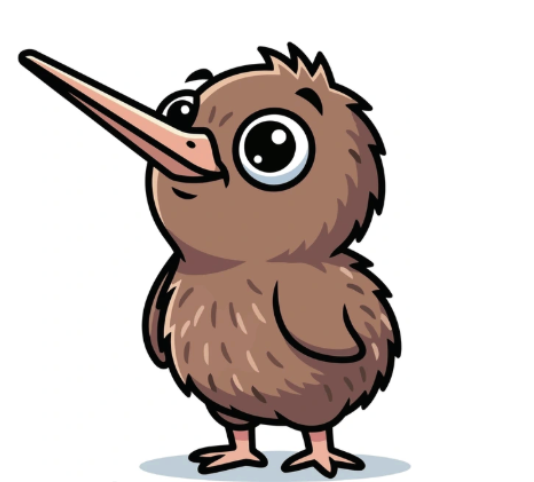

This website is all about our company SaveTheKiwi, it contains everything you need to know about New Zealand Wildlife and what makes our country so unique and special! From images of our wildlife to noises of what certain animals make so you can find them in your backyard, this website aims to help connect New Zealand people to the environment and nature! If you want to learn more, click the menu bar on the top right of your screen!